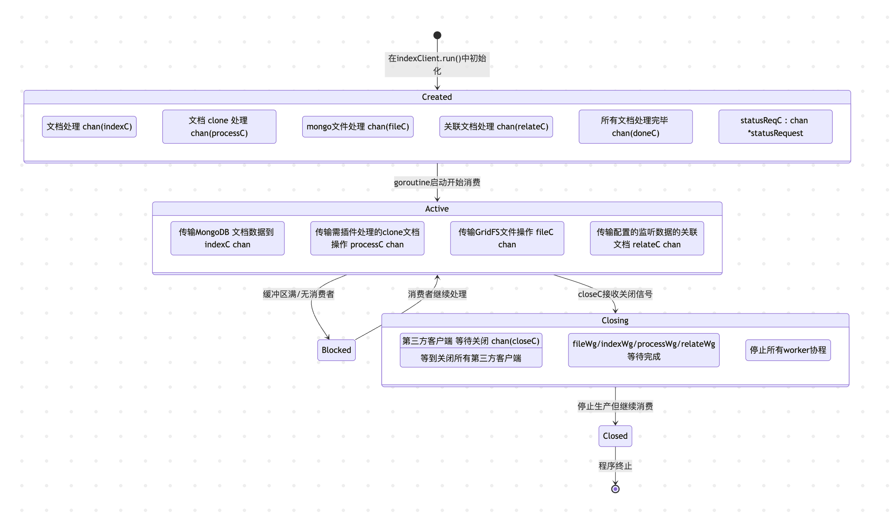
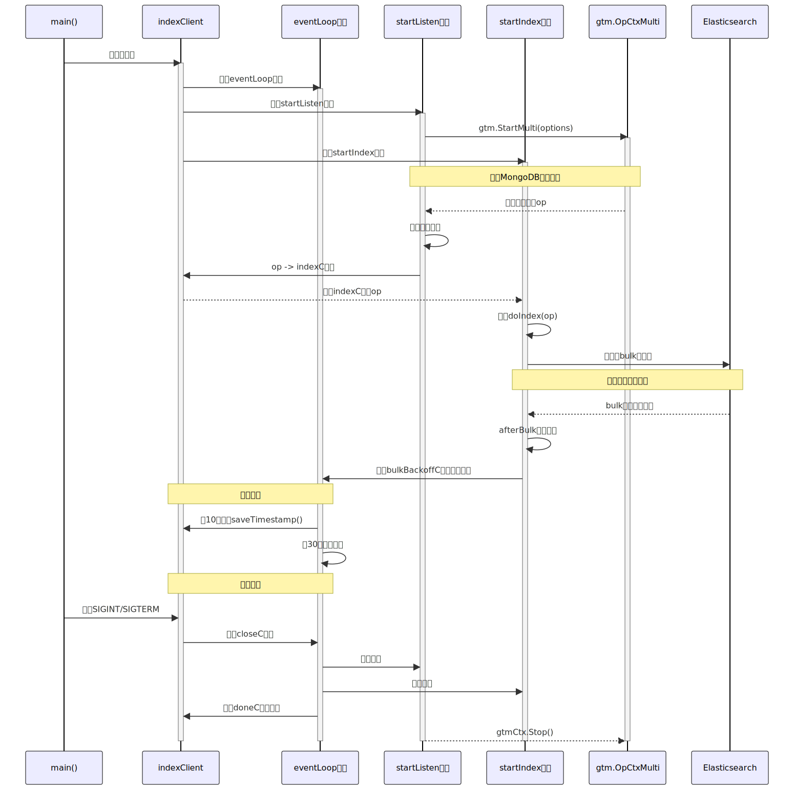

最近在做一个 mongoDB 的存储数据到 es 中进行检索的工作，也是通过此文学习一下 monstache 是如何做同步，以及管理可用性和一致性的，同时学习 golang 相关的 chan 的生命周期
当我们想实现检索 mongoDB 中的数据，通过 like 的方式在 DB 中检索肯定是不行的，如何根据关键词搜索出对应用户之前相关的记录，最好的方式还是放到搜索引擎 es 中，由于之前数据从没有同步到 monstache 过，所以需要使用一些工具来实现同步数据的功能，可能在 mongoDB 中的数据，不一定是检索想要的，也可以通过编写工具来进行多个集合的关联处理，在mapping 过数据之后，再同步到 es 中来方便检索。
使用工具到 es 有多种方式：
monstache
Monstache不仅支持软删除和硬删除，还支持数据库删除和集合删除，能够确保Elasticsearch端实时与源端数据保持一致。
flink cdc
logstache
使用 cursor 对monstache 进行总结:
全量同步
可以在 config.toml 中配置toml:"direct-read-namespaces"，使用 mongoDB 客户端直接查询指定的 namespace
将查询结果按批次处理并索引到 Elasticsearch
增量同步
支持 oplog 和 change stream 两种增量同步方式。
文档处理流程
筛选: 通过 filterWithRegex 等函数确定哪些文档需要处理
转换: 通过 JavaScript 脚本、Go 插件或内联规则转换文档
关联: 处理关联的文档
索引: 最终将文档批量发送到 Elasticsearch
高可用/集群实现
clusterName 配置: 同一集群的节点共享 ClusterName
worker 配置: 同一集群不同worker 节点就是 clusterName + workerName
leader election: 同一 worker 可以有多个备用节点，使用 mongoDB 作为锁(使用 index ttl ) + 心跳来实现领导选举
状态管理: 共享最后同步的时间戳(lastTs)到 mongoDB 集合中
断点续传
monstache 支持断点续传，保证重启后能从上次处理的位置继续:
根据 ResumeStrategy 选择时间戳或 token 方式
将处理状态(lastTs或 token)存储在 mongoDB，重启时进行检索
监控服务器
提供 http 服务器用于监控和管理
健康检查
同步统计
实例信息
eventLoop 处理
处理各种事件和信号
回退处理
当 es 同步数据出错后，会基于熔断的机制，进行恢复
下面基于这几个模块进行分析：
数据处理
管道处理以及优雅下线
回退处理
断点续传
插件管理
高可用处理
1. 数据处理
不管是 directNamespace 进行全量同步，还是监听增量的变更，都会写入到同一管道进行处理:
1 2 3 4 5 6 7 8 9 10 11 12 13 14 15 16 17 18 19 20 21 22 23 24 25 26 27 28 29 30 31 32 33 34 35 36 37 38 39 40 41 42 43 44 45 46 47 48 49 50 51 52 53 54 55 56 57 58 59 60 61 62 63 64 65 66 67 68 69 70 71 72 73 74 75 76 77 78 79 80 81 82 83 func (ic *indexClient) for {select {case op, open := <-ic.gtmCtx.OpC:if !ic.enabled {break if op == nil {if !open && !allOpsVisited {true true break if op.IsSourceOplog() {if ic.config.ResumeStrategy == tokenResumeStrategy {if err = ic.routeOp(op); err != nil {func (ic *indexClient) error ) {if processPlugin != nil {if op.IsDrop() {else if op.IsDelete() {else if op.Data != nil {return func (ic *indexClient) error ) {false if op.IsSourceOplog() && len (ic.config.Relate) > 0 {if !skip {if ic.hasFileContent(op) {else {return func (ic *indexClient) for i := 0 ; i < 5 ; i++ {1 )go func () defer ic.indexWg.Done()for op := range ic.indexC {if err := ic.doIndex(op); err != nil {
2. 管道以及处理生命周期
这里涉及多管道数据处理，以及 graceful shut down 等处理，需了解到各管道之间的数据流向和处理关系，下面是一个大概的管道数据关系

这里重点说明一下优雅关闭下的各管道处理流程，首先，是在什么情况下会进行优雅关闭:
设置了全量读取完成后，直接退出
1 2 3 4 5 6 7 8 9 10 11 12 13 14 15 16 17 18 19 20 21 22 23 24 func (ic *indexClient) len (ic.config.DirectReadNs) > 0 if directReadsEnabled {go func () if ic.config.Resume {if exitAfterDirectReads {var exit bool if exit {30
monstache 会在最开始的时候，监听系统信号，当监听到退出信号，也会进行优雅退出
1 2 3 4 5 6 7 8 9 10 11 12 13 14 15 16 17 18 19 20 21 22 23 24 25 26 27 28 func (sh *sigHandler) go func () make (chan os.Signal, 1 )select {case <-sigs:0 )case ic := <-sh.clientStartedC:go func () "Forcing shutdown, bye bye..." )1 )"Starting clean shutdown" )10
onExternalShutdown处理的是当意外退出后，需要根据是否开启全量写入状态，等待 500ms 后，在停止所有 workers 和客户端
1 2 3 4 5 6 7 8 9 10 11 12 13 14 15 16 17 18 19 20 21 22 23 24 25 26 27 28 29 func (ic *indexClient) defer ic.rwmutex.Unlock()true func (ic *indexClient) if len (ic.config.DirectReadNs) == 0 {return 500 ) * time.Millisecond)defer t.Stop()select {case <-t.C:true case <-drc:func (ic *indexClient) chan struct {} {make (chan struct {})go func () close (c)return c
stopAllWorkers 做的事情就是:
先停止监听数据变化
直到没有数据会过来后，等待关闭相关的文档处理chan
1 2 3 4 5 6 7 8 9 10 11 12 13 14 15 func (ic *indexClient) "Stopping all workers" )close (ic.relateC)close (ic.fileC)close (ic.indexC)close (ic.processC)
doneC 就是一个监听开始关闭客户端的信道，同时设置超时关闭时间,当收到要关闭客户端后，进行超时关闭
1 2 3 4 5 6 7 8 9 10 11 12 13 14 15 16 17 18 19 20 21 22 23 24 25 26 27 28 29 30 31 32 33 34 35 36 37 38 39 40 41 42 43 44 45 46 47 48 49 50 51 52 53 54 55 56 57 58 59 60 61 62 63 64 65 66 67 68 69 70 71 72 73 74 75 76 77 func (ic *indexClient) for {select {case timeout := <-ic.doneC:false return func (ic *indexClient) int ) {"Shutting down" )go ic.closeClient()make (chan bool )go func () defer closeT.Stop()false for !done {select {case <-ic.closeC:true close (doneC)case <-closeT.C:true close (doneC)func (ic *indexClient) if ic.mongo != nil && ic.config.ClusterName != "" {if ic.hsc != nil {true if ic.bulk != nil {if ic.bulkStats != nil {if len (ic.config.DirectReadNs) > 0 {if !ic.directReadsPending {"Direct reads completed" )if ic.config.DirectReadStateful {if err := ic.saveDirectReadNamespaces(); err != nil {"Error saving direct read state: %s" , err)close (ic.closeC)
3. 回退处理
es bulk server 设置 backoff 函数
1 2 3 4 5 6 7 8 9 10 11 12 13 14 15 16 17 18 19 20 21 22 23 24 25 26 27 28 29 30 31 32 33 34 35 36 37 38 39 40 41 42 43 44 45 46 47 48 49 50 51 52 53 func (ic *indexClient) error ) {"monstache" )if config.ElasticRetry == false {return bulkService.Do(context.Background())func (ic *indexClient) func (int64 , []elastic.BulkableRequest, *elastic.BulkResponse, error ) return func (executionID int64 , requests []elastic.BulkableRequest, response *elastic.BulkResponse, err error ) if response == nil || !response.Errors {0 )return if failed := response.Failed(); failed != nil {false for _, item := range failed {if item.Status == http.StatusConflict {continue if item.Status == http.StatusNotFound {continue true if backoff {"Backing off for %.1f minutes after bulk indexing failures." , wait.Minutes())1 )
主进程 eventLoop 中会监听这个 bulkBackoffC ，当监听到之后，会根据设置的超时时间，自旋一段时间, 当收到信号，也会主动退出自旋，然后主进程监听到信号，也会主动进行 shutdown，也会响应状态探测函数
1 2 3 4 5 6 7 8 9 10 11 12 13 14 15 16 17 18 19 20 21 22 23 24 25 26 27 28 29 30 31 32 33 34 35 36 37 38 39 40 41 42 43 44 45 46 47 48 49 func (ic *indexClient) int (ic.bulkErrs.Load())if !ok {return waitfunc (ic *indexClient) defer timer.Stop()make (chan os.Signal, 1 )defer signal.Stop(sigs)for {select {case <-timer.C:return case <-sigs:return case req := <-ic.statusReqC:true ,func (ic *indexClient) for {select {case wait := <-ic.bulkBackoffC:
4. 断点续传
保存时间戳的核心函数: saveTimestamp() , 每次保存最新的时间戳到ConfigDatabaseName = cluster + worker
1 2 3 4 5 6 7 8 9 10 11 12 13 14 15 16 func (ic *indexClient) error {"monstache" )map [string ]interface {}{"ts" : ic.lastTs,true )"_id" : ic.config.ResumeName,"$set" : doc,return err
时间戳更新机制: 每隔 10s 执行一次，根据重启策略，来进行保存时间戳或是 token
1 2 3 4 5 6 7 8 9 10 11 12 13 14 15 16 17 18 19 20 21 22 23 24 25 26 27 func (ic *indexClient) 10 * time.Second)if !ic.config.Resume {for {select {case <-timestampTicker.C:if !ic.enabled {break if ic.config.ResumeStrategy == tokenResumeStrategy {else {
主要解释时间戳机制: nextTimestamp()
1 2 3 4 5 6 7 8 9 10 11 12 13 14 15 16 17 18 19 20 21 22 23 func (ic *indexClient) if ic.hasNewEvents() {if err := ic.saveTimestamp(); err == nil {else {func (ic *indexClient) bool {if ic.lastTs.T > ic.lastTsSaved.T ||return true return false
在优雅关闭时，也会保存一次时间戳，避免心跳还没有执行
1 2 3 4 5 6 7 8 9 10 11 12 13 14 15 16 17 func (ic *indexClient) int ) {if ic.config.Resume {if ic.config.ResumeStrategy == tokenResumeStrategy {if err := ic.saveTokens(); err != nil {"Unable to save tokens: %s" , err)else {if err := ic.saveTimestamp(); err != nil {"Unable to save timestamp: %s" , err)
什么时候获取lastTs 呢，在每次有新的更新数据来的时候，就会赋值 lastTs
1 2 3 4 5 6 7 8 9 10 11 12 13 14 15 16 17 18 19 20 21 22 23 24 25 26 27 28 29 30 31 32 33 34 35 36 37 func (ic *indexClient) for {select {case op, open := <-ic.gtmCtx.OpC:if !ic.enabled {break if op == nil {if !open && !allOpsVisited {true true break if op.IsSourceOplog() {if ic.config.ResumeStrategy == tokenResumeStrategy {if err = ic.routeOp(op); err != nil {
如果是全量同步时，则会在完成全量同步时，保存副本集中最小提交的时间戳，用于重启增量同步
1 2 3 4 5 6 7 8 9 10 11 12 13 14 15 16 17 18 19 20 21 22 23 24 25 26 27 28 29 30 31 32 33 34 35 36 37 38 39 40 func (ic *indexClient) len (ic.config.DirectReadNs) > 0 if directReadsEnabled {go func () if ic.config.Resume {if exitAfterDirectReads {var exit bool if exit {30 func (ic *indexClient) if rs, err := gtm.GetReplStatus(ic.mongo); err == nil {if ic.lastTs, err = rs.GetLastCommitted(); err == nil {if err = ic.saveTimestamp(); err != nil {else {else {
启动时，也会获取时间戳
1 2 3 4 5 6 7 8 9 10 11 12 13 14 15 16 17 18 19 20 21 22 23 24 25 26 27 28 29 30 31 32 33 34 35 36 37 38 39 40 41 42 43 44 45 46 func (ic *indexClient) var after gtm.TimestampGeneratorif config.ResumeStrategy != timestampResumeStrategy {return afterelse if config.Resume {func (client *mongo.Client, options *gtm.Options) error ) {var candidateTs primitive.Timestampvar tsSource string var err error "monstache" )"_id" : config.ResumeName,if err = result.Err(); err == nil {make (map [string ]interface {})if err = result.Decode(&doc); err == nil {if doc["ts" ] != nil {"ts" ].(primitive.Timestamp)if candidateTs.T == 0 {"Resuming from timestamp %+v" , ts)return ts, nil return after
startListen 后，当成为主节点，开始链接 mongo，同时配置数据，启动服务监听来自 mongo 的数据
1 2 3 4 5 6 7 8 9 10 11 12 13 14 15 16 17 18 19 20 func (ic *indexClient) if config.ResumeStrategy == timestampResumeStrategy {if config.ResumeFromEarliestTimestamp {len (conns), infoLog)else {if config.readShards() && !config.DisableChangeEvents {
下面的时间戳处理器，是给分片集群使用的，此时connectionsTotal 会大于 1，然后算出最小的时间戳，每个分片连接都会调用这个 after 函数，此时会给每个mongo分片传递这个最早的时间戳（有可能每个分片的数据有关联，然后使用最小时间戳，会把关联的文档都会处理了），从最小时间戳开始同步
1 2 3 4 5 6 7 8 9 10 11 12 13 14 15 16 17 18 19 20 21 22 23 24 25 26 27 28 29 30 31 32 33 34 35 func (resolver *TimestampResolverEarliest) string ) chan primitive.Timestamp {defer resolver.m.Unlock()if resolver.connectionsQueried >= resolver.connectionsTotal {"Earliest oplog resume timestamp is already calculated: %s" ,make (chan primitive.Timestamp, 1 )return tmpResultChanif resolver.connectionsQueried == resolver.connectionsTotal {"Earliest oplog resume timestamp calculated: %s, source: %s" ,for i := 0 ; i < resolver.connectionsTotal; i++ {return resolver.resultChan
monstache 保存的时间戳 > oplog 最新时间戳
buildConnections 处理监听比如分片集群的connection，副本集不会出现这种场景
处理恢复时间戳的策略
NewTimestampResolverEarliest 处理基于副本集最早时间戳开始恢复
TimestampResolverSimple 从记录的时间戳后面开始恢复
buildGtmOptions
配置各种 filter chain， 直接读取的 namespace
开始同步数据的时间戳生成器
ResumeFromTimestamp 基于给定的时间戳开始同步
Resume 为 true，从上次保存的时间戳开始同步
基于时间戳策略，读取 opLog 的时间戳，然后进行同步
Replay 则是从 mongo 记录的 oplog 的时间戳开始同步
StartMulti 开启多个 client 的监听
如果配置了分片，则监听分片集群AddShardListener
5. 插件管理
monstache 支持使用自定义的插件，来处理数据流
各插件的作用
Pipeline : 作用于数据源端（MongoDB 侧），在数据被读取之前应用，修改从 MongoDB 获取的数据流Map : 作用于单个文档上，在文档读取后、索引前应用Filter : 决定是否处理某个文档，在读取文档后立即应用Process : 对clone 的文档做处理
在有数据更新时，会进行 routeOp 处理:
1 2 3 4 5 6 7 8 9 10 11 12 13 14 15 16 func (ic *indexClient) error ) {if processPlugin != nil {if op.IsDrop() {else if op.IsDelete() {else if op.Data != nil {return
在 routeData 中，会使用 mapperPlugin 来处理数据:
1 2 3 4 5 6 7 8 9 10 11 12 13 14 15 16 17 18 19 20 21 22 23 24 25 26 27 28 29 30 31 32 33 34 35 36 37 38 39 40 41 42 43 44 45 46 47 48 49 50 51 52 53 54 55 56 57 58 59 60 61 62 63 64 65 66 67 68 69 70 71 72 73 74 75 76 77 78 79 80 81 82 83 84 85 86 87 88 89 90 91 92 93 94 95 96 97 98 99 100 101 102 103 func (ic *indexClient) error ) {false if op.IsSourceOplog() && len (ic.config.Relate) > 0 {if !skip {if ic.hasFileContent(op) {else {return func (ic *indexClient) error ) {if err = ic.mapData(op); err == nil {if op.Data != nil {else if op.IsUpdate() {return func (ic *indexClient) error {if mapperPlugin != nil {return ic.mapDataGolang(op)return ic.mapDataJavascript(op)func (ic *indexClient) error {if err != nil {return errif output == nil {return nil if output.Drop {nil else {if output.Skip {map [string ]interface {}{}else if !output.Passthrough {if output.Document == nil {return errors.New("Map function must return a non-nil document" )make (map [string ]interface {})if output.Skip {"skip" ] = true if output.Index != "" {"index" ] = output.Indexif output.ID != "" {"id" ] = output.IDif output.Type != "" {"type" ] = output.Typeif output.Routing != "" {"routing" ] = output.Routingif output.Parent != "" {"parent" ] = output.Parentif output.Version != 0 {"version" ] = output.Versionif output.VersionType != "" {"versionType" ] = output.VersionTypeif output.Pipeline != "" {"pipeline" ] = output.Pipelineif output.RetryOnConflict != 0 {"retryOnConflict" ] = output.RetryOnConflictif len (meta) > 0 {"_meta_monstache" ] = metareturn nil
filter plugin 会在开始的时候，在读取 directNameSpace 和 监听新来的数据是作为 filter chain 进行处理
1 2 3 4 5 6 7 8 9 10 11 12 13 14 15 16 17 18 19 20 21 22 23 24 25 26 27 28 29 30 31 32 33 34 35 36 37 38 39 40 41 func (ic *indexClient) var nsFilter, filter, directReadFilter gtm.OpFilterfunc (ic *indexClient) var pluginFilter gtm.OpFilterif config.Worker != "" {if err != nil {append (filterArray, workerFilter)else if config.Workers != nil {"Workers configured but this worker is undefined. worker must be set to one of the workers." )if filterPlugin != nil {append (filterArray, pluginFilter)else if len (filterEnvs) > 0 {append (filterArray, pluginFilter)if pluginFilter != nil {return filterArray
6. 高可用处理
可以在启动时，设置不同的 workers 来并行处理不同的 opLog 的更新，这个时候需要将 opLog 分派给不同的 worker，使得数据一致性，不能重复处理，这个是通过设置 hash 来进行处理
在 buildFilterArray 的时候，通过设置 workerFilter，opLog 经过hash 函数处理后，只会被路由到某一个 worker
1 2 3 4 5 6 7 8 9 10 11 12 13 14 15 16 17 18 19 20 21 22 23 24 25 26 27 28 29 30 func (ic *indexClient) var pluginFilter gtm.OpFilterif config.Worker != "" {if err != nil {append (filterArray, workerFilter)else if config.Workers != nil {"Workers configured but this worker is undefined. worker must be set to one of the workers." )if filterPlugin != nil {append (filterArray, pluginFilter)else if len (filterEnvs) > 0 {append (filterArray, pluginFilter)if pluginFilter != nil {return filterArray
最后在赋一张 cursor 生成的全流程图的描述:
